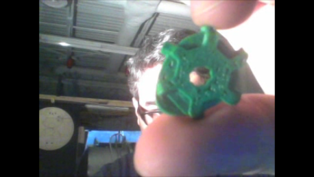

Does anyone want to make LCL-inspired musical gear and instruments with me?
I just got done with my first 3D model for 3D printing, it's my first design. It's a remix from someone else's design but I changed quite a bit.
This is a "steampunk" guitar pick. The big gear on the face is heavily inspired by LCL.

You can see/download/remix/print my guitar pick here: http://www.thingiverse.com/thing:351150
It is based off of these two guitar picks:
Guitar Pick by cyrozap - original guitar pick
Creepick by carlosgs - Minecraft-themed guitar pick
and it uses this remixed model:
John Carter's Pro Gear (community model at Tinkercad)
You can see a little better detail in a YouTube video I made, I couldn't get the lighting worked out very well but I did my best with my experience and setup:
So, how about it? Anyone want to make LCL instruments and music equipment with me?